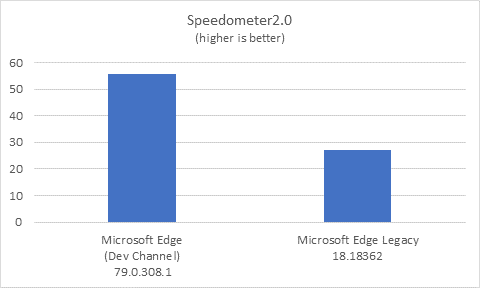

The Microsoft Edge team ran the Speedometer2.0 benchmark on the latest versions of Microsoft Edge Legacy and Microsoft Edge as of 10/24/2019: Microsoft EdgeHTML 18.18362 and the new Microsoft Edge (Dev Channel) 79.0.308.1.
For both browsers, the test was performed on the same laptop PC running Windows 10 Version 1903 (OS Build 18362.10024) and connected to the Internet through WiFi.
The next version of Microsoft Edge scored 2x faster than Microsoft Edge Legacy according to the Speedometer2.0 benchmark.
| Speedometer2.0 avg. score | |
| Microsoft Edge (64-bit) | 55.57 |
| Microsoft Edge Legacy (64-bit) | 27.11 |
The test was performed on a laptop PC running the Windows 10 Version 1903 (OS Build 18362.10024). All tests were initiated manually on the same machine (Surface Laptop with Intel(R) Core(TM) i5-7200U CPU @ 2.50GHz (4 CPUs), ~2.7GHz and 4GB RAM) with no other applications running and no additional browser tabs open. Power cable was connected during the tests. Each test was run 12 times in each browser, with the median score reported above.
| OS | Windows 10 Enterprise 64-bit (Build 18362.10024) |
| Microsoft Edge | Microsoft Edge (Dev Channel) 79.0.308.1 |
| Microsoft Edge Legacy | Microsoft EdgeHTML 18.18362 |
| Processor | i5-7200U CPU @ 2.50GHz (4 CPUs) |
| Memory | 4GB |